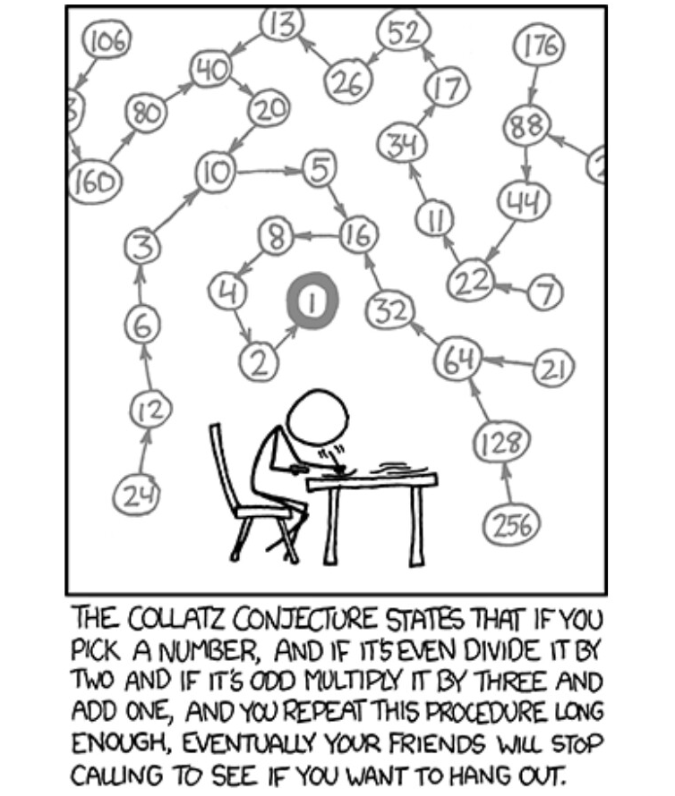

In what concerns the continuous evaluation solving exercises grade during the semester, you should submit until 23:59 of
(this exercise will still be available for submission after that deadline, but without counting towards your grade)
[to understand the context of this problem, you should read the class #03 exercise sheet]
In this problem you should submit a function as described. Inside the function do not print anything that was not asked!
The name of the .py source file you submit to Mooshak should NOT start with a digit (you will get an error if you submit it like that).

The Collatz sequence, also known as the \( 3n + 1 \) sequence, is a mathematical sequence defined for positive integers. The sequence starts with any positive integer n and follows these rules:
Write a function collatz(n) that takes a positive integer n and generates the Collatz sequence starting from n. The function should return a string representation of the entire sequence following the format depicted on the example output.
The following limits are guaranteed in all the test cases that will be given to your program:
| 1 ≤ n ≤ 1000 | The starting integer for the Collatz sequence |
Example Function Calls
print(collatz(1)) print(collatz(3)) print(collatz(12))
Example Output
1 3, 10, 5, 16, 8, 4, 2, 1 12, 6, 3, 10, 5, 16, 8, 4, 2, 1